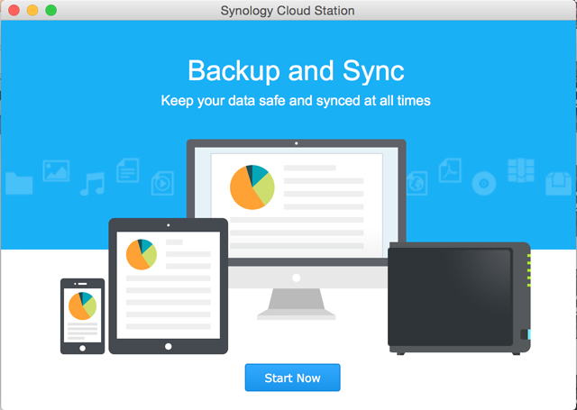
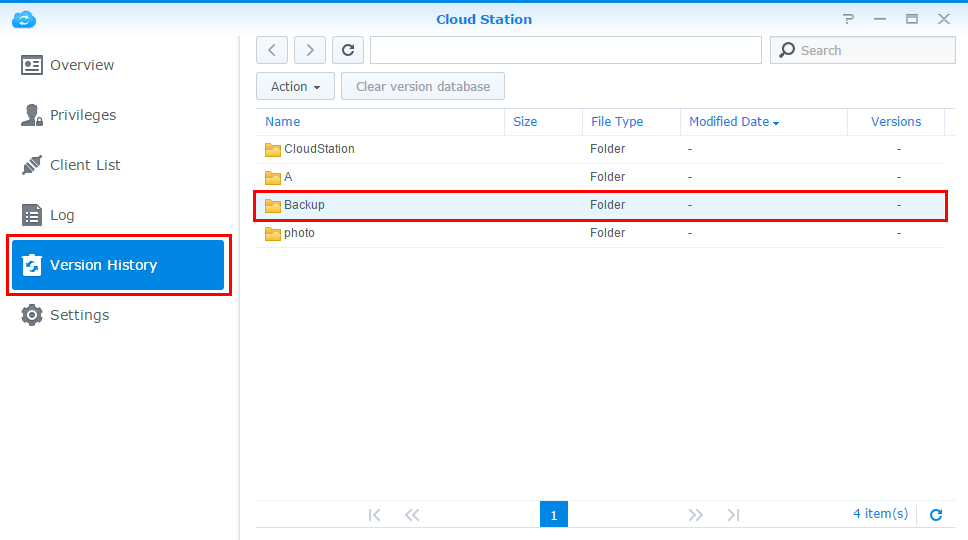
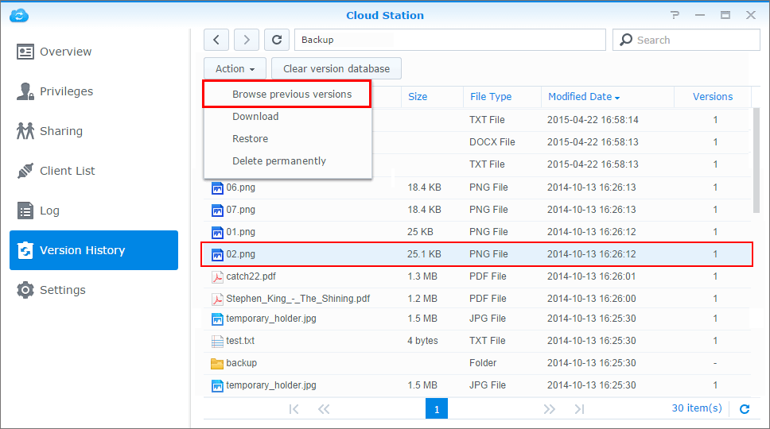

Přehled
Aplikace Cloud Station není jen sofistikovaný meziplatformový synchronizační software, uživatelé ho navíc mohou používat jako chytřejší variantu pro zálohování svých osobních počítačů. Používání aplikace Cloud Station jako zálohovacího společníka přináší několik výhod. Za prvé replikace dat v reálném čase poskytuje lepší hodnotu RPO, tj. kratší dobu, ve které může dojít k (nenahraditelné) ztrátě dat na počítači v případě větší nehody. Nejenže probíhá okamžitě, v porovnání s tradičním zálohováním, které v daném okamžiku používá velkou šířku pásma, pomáhá šířku pásma také výrazně šetřit. Nastavením velikosti nebo typu souboru na klientovi PC je snadno možné filtrovat soubory ze stejné složky, které nechcete zálohovat. Aplikace Cloud Station může také uchovávat až 32 historických verzí jednoho souboru, což jí umožňuje obnovení do počítače ze strany serveru (NAS).
1. Nastavení aplikace Cloud Station na zařízení Synology NAS
- Přihlaste se do systému DSM pomocí účtu ze skupiny administrator.
- Spusťte aplikaci Cloud Station.
- Pokud jste nepovolili funkci složky uživatele, budete k tomuto kroku vyzváni. Klikněte na možnost OK.
- Budete přesměrováni na stránku nastavení uživatele. Povolte uživatele homes a klikněte na možnost Použít.
- Nyní přejděte zpět do aplikace Cloud Station, kde budete vyzváni k tomu, abyste ji povolili. Klikněte na možnost Ano.
- Přejděte do části Oprávnění a zadat, kteří uživatelé mohou používat aplikaci Cloud Station. Klepněte na možnost Uložit.
- Na zařízení Synology NAS nastavte pro účely zálohování sdílenou složku. Postupujte takto: přejděte do části Ovládací panel > Sdílená složka a klikněte na možnost Vytvořit.
- Složku pojmenujte a vyplňte příslušné údaje. Klikněte na možnost OK. Složku například pojmenujeme Záloha.
- Na kartě Oprávnění určete, kteří uživatelé budou mít do složky přístup. Například dáme správci ke složce oprávnění čtení/zápis. Klikněte na možnost OK.
- Přejděte do části Cloud Station > Nastavení > Sdílení, kde vyberete složku Záloha, a klikněte na možnost Povolit.


2. Nastavení aplikace Cloud Station na zařízení počítači se systémem Windows
Postupujte podle návodu na nastavení aplikace Cloud Station na počítačích PC nebo Mac
2.1 U počítačů PC
- Přejděte do části Cloud Station > Přehled a klikněte na tlačítko Stáhnout.
- Kliknutím na tlačítko stáhnete aplikaci Cloud Station do počítače se systémem Windows. (Aplikaci Cloud Station si můžete stáhnout také z webu Centrum pro stahování společnosti Synology.)
- Spusťte na počítači instalační program a postupujte podle pokynů pro instalaci aplikace Cloud Station.
- Po instalaci na počítači aplikaci Cloud Station spusťte. Klikněte na možnost Začít nyní.
- Zadejte adresu serveru Synology NAS se spuštěnou aplikací Cloud Station (nebo QuickConnect ID), uživatelské jméno a heslo. (Můžete také kliknout na ikonu vyhledávání vpravo a Cloud Station automaticky vyhledá ostatní Synology NAS v rámci vaší sítě LAN.) Klikněte na možnost Další.
- Vyberte, jak úlohu nastavit (zde zvolíme možnost Rozšířené nastavení, protože nastavujeme složku konkrétně pro zálohování). Klikněte na možnost Další.
- Vyberte na počítači složku, kterou chcete synchronizovat se složkou Záloha, kterou jste vytvořili předtím na zařízení Synology NAS. Klikněte na možnost Další.
- Nastavení dokončíte kliknutím na možnost Hotovo.


Vytvoření další úlohy:
- Přejděte do části Cloud Station > Nastavení a povolte pro tuto novou úlohu sdílenou složku Mým příkladem je fotografie. Přesvědčte se, že máte pro fotografii oprávnění pro čtení/zápis.
- Zpátky v aplikaci Cloud Station na počítači klikněte na možnost Vytvořit.
- Vyberte zařízení Synology NAS pro nový úkol. Zde vybereme možnost Připojené zařízení Synology NAS, protože vytváříme další úlohu pro stejné zařízení Synology NAS. Klikněte na možnost Další.
- Vyberte možnost Rozšířená nastavení a pomocí zbývajících pokynů průvodce pokračujte v nastavení.


2.2 Pro počítač Mac
- Přejděte do části Cloud Station > Přehled a klikněte na tlačítko Stáhnout.
- Kliknutím na tlačítko stáhnete aplikaci Cloud Station do počítače Mac. (Aplikaci Cloud Station si můžete stáhnout také z webu Centrum pro stahování společnosti Synology.)
- Spusťte na počítači instalační program a postupujte podle pokynů pro instalaci aplikace Cloud Station.
- Po instalaci na počítači aplikaci Cloud Station spusťte. Klikněte na možnost Začít nyní. 
- Zadejte adresu serveru Synology NAS se spuštěnou aplikací Cloud Station (nebo QuickConnect ID), uživatelské jméno a heslo. (Můžete také kliknout na ikonu vyhledávání vpravo a Cloud Station automaticky vyhledá ostatní Synology NAS v rámci vaší sítě LAN.) Klikněte na možnost Další.
- Vyberte, jak úlohu nastavit (zde zvolíme možnost Rozšířené nastavení, protože nastavujeme složku konkrétně pro zálohování). Klikněte na možnost Další.
- Vyberte na počítači složku, kterou chcete synchronizovat se složkou Záloha, kterou jste vytvořili předtím na zařízení Synology NAS. Klikněte na možnost Další.
- Nastavení dokončíte kliknutím na možnost Hotovo.


Postup vytvoření nové úlohy:
- Přejděte do části Cloud Station > Nastavení a povolte pro tuto novou úlohu sdílenou složku Mým příkladem je fotografie. Přesvědčte se, že máte pro fotografii oprávnění pro čtení/zápis.
- Zpátky v aplikaci Cloud Station na počítači klikněte na možnost Vytvořit.
- Vyberte zařízení Synology NAS pro nový úkol. Zde vybereme možnost Připojené zařízení Synology NAS, protože vytváříme další úlohu pro stejné zařízení Synology NAS. Klikněte na možnost Další.
- Vyberte možnost Rozšířená nastavení a pomocí zbývajících pokynů průvodce pokračujte v nastavení.


3. Načítání dat z aplikace Cloud Station
Pokud omylem soubor odeberete nebo přepíšete, aplikace Cloud Station umožňuje jeho jednoduché obnovení.
4.1 Stažení předchozí verze synchronizovaného souboru na počítači PC
- Klikněte na ikonu Cloud Station na hlavním panelu a klikněte na ikonu složky.
- Klikněte pravým tlačítkem myši na vybraný soubor a vyberte možnost Synology Cloud Station > Procházet předchozí verze.
- Vyhledejte verzi, kterou chcete stáhnout, a klikněte na ikonu stahování.
- Zadejte název souboru a vyberte cílové umístění pro uložení souboru.


4.1 Stažení předchozí verze synchronizovaného souboru na počítači Mac
- Klikněte na ikonu Cloud Station na hlavním panelu a klikněte na ikonu složky.
- Klikněte pravým tlačítkem myši na vybraný soubor a vyberte možnost Synology Cloud Station > Procházet předchozí verze.
- Vyhledejte verzi, kterou chcete stáhnout, a klikněte na ikonu stahování.
- Zadejte název souboru a vyberte cílové umístění pro uložení souboru.


4.3 Stažení nebo obnovení předchozí verze synchronizovaného souboru z aplikace Cloud Station
- Přejděte do části Cloud Station > Historie verzí a vyberte složku Záloha, kterou jste vytvořili dříve. 
- Vyberte soubor, který chcete načíst, a klikněte na možnost Akce > Procházet předchozí verze. 
- Vyberte verzi souboru, který chcete stáhnout, a klikněte na možnost Stáhnout. Nebo pokud si jste jistí, že chcete vybranou verzi obnovit, klikněte na možnost Obnovit – aktuální verze se takto přepíše.

4. Důležité poznámky
- Vždy uchovávejte historické verze pro případ, že se soubor omylem odebere nebo přepíše.
- V globálních nastaveních je možné nakonfigurovat, jestli se soubor ze zařízení NAS načte nebo jestli se při odstranění souboru na vašem počítači odstraní i na zařízení NAS.
5. Další ochrana dat
Další způsoby, jak chránit a zálohovat data, najdete po kliknutí na tento odkaz, kde se nacházejí tutoriály s podrobnostmi o dalších službách zálohování nabízených na systému DSM.